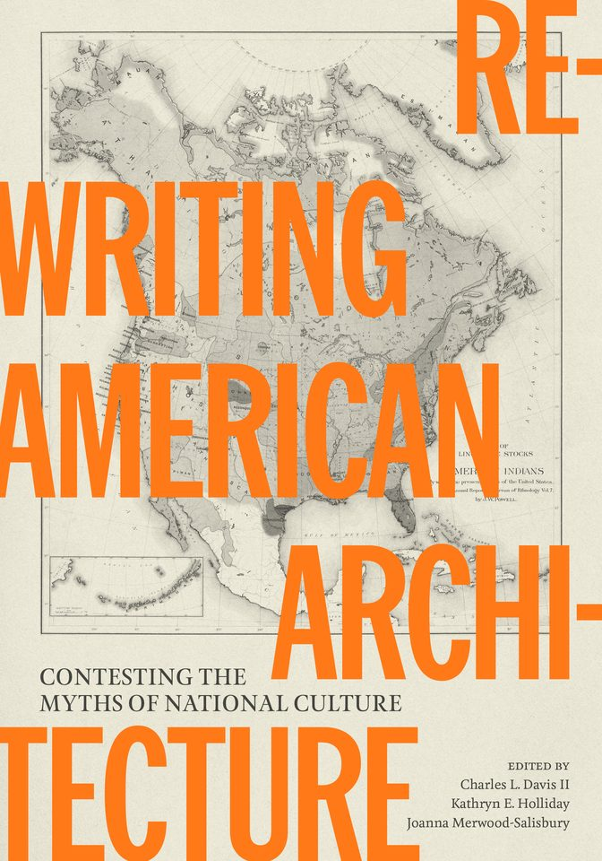

What this page is: our shelf card for one new book. Read the short version below, then tap Buy Now to order it from Bookshop.org, where an independent bookstore gets the sale.

Rewriting American Architecture
The usual story of nineteenth-century American architecture is one of steady progress toward a single national style. The twenty essays in this collection argue that the buildings tell a messier story, shaped by race, labor, settler colonialism and territorial expansion. They range from Black builders and churches to Indigenous spatial practices, the Texas border and the politics of who counts as an architect.
Irene Cheng, author of The Shape of Utopia, calls it a "groundbreaking book" that "mounts an important challenge to the canonical narratives of nineteenth-century US architectural history."
The setting of the book is the United States across the long nineteenth century, from the early republic to the New Deal, with essays set in places such as Austin, Brownsville and Matamoros, Dakota Territory and Southern California. It is 408 pages with 114 black-and-white photographs. The University of Texas Press kindly sent us a digital copy. This page is our introduction, not a review. Read it, then tell us what you think.
What to do: if you love old buildings, historic preservation or American history, and want to see who built them and who was left out of the textbooks, tap Buy Now.
Buy NowTip the Booktender